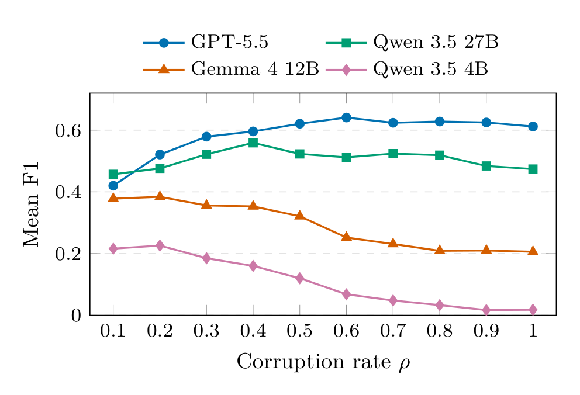

Modern vision-based agents have shifted toward skill-based problem-solving, where a skill is an executable image-to-image operation, e.g., cropping, thresholding, or edge detection. As these skill libraries grow, they accumulate duplicated, mislabeled, and defective skills. The signals normally used to curate them (a skill's name, description, or source code) say little about how the skill visually changes the image. We present VisCurate, a framework and benchmark that curates visual skill libraries from observed execution rather than from text. VisCurate runs each candidate skill pair on a shared probe battery and assigns one of six behavioral relations, each tied to a library edit that is safe to make. The benchmark injects seven defect types into a clean library at controlled rates, producing 300 reproducible instances with ground-truth relations and repairs. While text baselines accept up to five of six false merges on hard negatives, our verifier accepts none and recovers 51.2% of the pairs that are truly mergeable. On two real, uncurated libraries, VisCurate finds that 92% of the skills a package shares with its downstream copy are redundant, while execution confirms only 10 of 17 published equivalence claims. The curation problem also remains open, as the strongest of the nine automated curators recovers only about half of the repairs. We emphasize that visual skill libraries should be curated by behavior, not by description.

Figure 1. Overview of the VisCurate pipeline. (a) A noisy seed skill library is evaluated through an output-grounded equivalence verifier, which executes candidate skills on shared probes and certifies their behavioral relations from the resulting outputs. (b) These verified relations guide the structural edits proposed by the curation agent, which are validated before updating the library. The process repeats until a compact and organized skill library is produced.
A visual skill is a deterministic function that transforms an input image into an output image. Similar descriptions can hide different outputs, causing a silent merge, while different implementations can behave identically, causing a missed consolidation. VisCurate therefore compares the executed outputs instead of the descriptors. Because most skills are parameterized, it never compares at a single operating point: it evaluates both skills over a matched parameter grid on a probe battery \(x_1, \dots, x_m\) and aggregates by the worst case,
\[ D(s_a,s_b)=\max_{\theta\in\Theta^{\mathrm{grid}}}\;\frac{1}{m}\sum_{i=1}^{m} d\Big(\phi\big(f_{s_a}(x_i,\theta)\big),\,\phi\big(f_{s_b}(x_i,\theta)\big)\Big), \]where \(\phi\) canonicalizes the outputs. The worst case is what blocks spurious merges between skills that coincide on part of their domain: a Gaussian blur and a box blur agree at small kernels but diverge at large ones, and the max over the grid surfaces that divergence rather than averaging it away.
Each ordered pair receives exactly one relation. The classifier is hierarchical and stop-at-first: it evaluates relations cheapest-and-strictest first and returns the first that holds, so a stronger, more actionable relation is never masked by a weaker one.
=Exact
Outputs are identical across the battery at every shared parameter setting, up to a negligible L∞ tolerance.
permits merge
≈Perceptual
Human-indistinguishable: worst-case LPIPS below τpc, with an SSIM floor guarding LPIPS blind spots.
permits merge
⊆Subsumption
Directional: some setting of one skill reproduces every setting of the other, e.g., a fixed-angle rotation inside rotate-by-degrees.
permits parameterize
≡Semantic-preserving
Not pixel- or perceptually identical, but in the same region of DINO feature space, e.g., two edge detectors.
parameterize, never merge
⊕Complementary
The pair composes into a meaningful pipeline, e.g., dilation and erosion, confirmed by an executed composition test.
advisory only
≠Distinct
The default verdict by elimination, including spatial-extent mismatches with no subsumption certificate.
keep separate
A seventh outcome, Uncertain, is an intentional abstention: a pair whose deciding distance clears a calibrated threshold too narrowly (within a band δ) is routed to human review instead of being pushed into an unwarranted merge.
A corrupted library is the environment of a curation agent, here a frozen language model used as-is. The agent proposes actions from a fixed set; every structural edit takes effect only if the verifier certifies a relation that permits it, and the library is left unchanged otherwise.
| Action | Meaning |
|---|---|
add | Add a new skill |
remove | Remove a skill |
modify | Modify metadata/schema or function behavior |
retrieve | Retrieve/query a skill |
merge | Merge redundant skills |
split | Split one skill into multiple skills |
parameterize | Fold a specialization into a more general parameterized skill |
end | Stop the episode |
100
skills in L0
944
designed pairs
177
probes
7
defect types
300
instances
Base library. We hand-author a clean base library L0 of 100 skills spanning geometric/canvas, photometric, signal/morphology, and mask/reconstruction families, with a designed ground-truth relation graph G0. It embeds directional subsumptions, complementary pairs, and engineered hard negatives (e.g., Gaussian vs. box blur, nearest vs. bilinear vs. bicubic resize) that must not be merged. G0 enumerates 944 designed ordered pairs and is fixed before any metric runs.
Corruption. To emulate realistic library decay, seven defect types are injected at a controlled rate ρ:
Corrupted skills masquerade as built-in, so a defect is observable only through behavior. Sweeping ρ ∈ {0.1, …, 1.0}, three compositions (uniform, duplicate-heavy, metadata-heavy), five seeds, and single or mixed mode gives 300 exactly reproducible instances, each with its relation graph Gρ and an ideal-action key specifying the repair every defect warrants.
If names, descriptions, or source code told us how a skill behaves, a matcher built on them should make safe merge decisions on G0's 944 designed pairs. Since G0 designates no true duplicates, every merge proposed on it is false by construction.
| Method | Reads | FPRdist (%) ↓ | FMhard ↓ |
|---|---|---|---|
| Name match | name | 5.40 | 5 |
| TF–IDF cosine | description | 0.21 | 0 |
| Sentence embedding | description | 5.61 | 5 |
| Code embedding | source | 1.80 | 4 |
| AST (structural) | source | 0.00 | 0 |
| AST (semantic) | source | 0.00 | 0 |
| LLM judge | description | 0.11 | 1 |
| LLM judge | source | – | 0 |
| VisCurate (ours) | outputs | 0.00 | 0 |
The corrupted graphs Gρ carry known relations by construction, including injected duplicates, so they measure how much real redundancy the verifier recovers: 13,658 labeled pairs across all 300 instances, 3,310 of them truly mergeable.
| Relation | Support | Recall | Precision |
|---|---|---|---|
| Exact | 1,640 | 0.968 | 1.000 |
| Perceptual | 1,670 | 0.046 | 0.704 |
| Subsumption | 4,672 | 0.758 | 0.996 |
| Semantic-Preserving | 3,424 | 0.319 | 0.278 |
| Complementary | 310 | 0.000 | 0.000 |
| Distinct | 1,942 | 0.384 | 0.188 |
Byte-identical duplicates are found almost always (Exact recall 0.968) and near-duplicates almost never (Perceptual recall 0.046), because 1,594 of 1,670 Perceptual pairs are labeled Semantic-Preserving, one conservative notch below the label that would allow their merge. On an expanded slice of 69 engineered hard negatives, the verifier makes 0/69 false merges.
92%
Cross-version. pilgram 2.0.0 and pilgram 2.0.10 share 25 filters. 23 are
byte-identical on all 177 probes and certified Exact; the verifier correctly declines
to merge the two that really diverged.
10 of 17
Cross-library. Across 93 implementations from OpenCV, PIL, scikit-image, torchvision, Kornia, and Albumentations, documentation groups 17 pairs as directly equivalent, yet execution certifies only 10 as mergeable at aligned parameters.
We evaluate nine language-model curators from four families (Llama 3.1 and 3.2, Qwen 3.5, and Gemma 4 at multiple sizes, and GPT-5.5), each on the same 300 instances with a budget of 200 actions.
| Model | μP ↑ | μR ↑ | μF1 ↑ [95% CI] | IS ↑ | AC ↓ |
|---|---|---|---|---|---|
| Llama 3.2 1B | 0.000 | 0.000 | 0.000 [0.000, 0.000] | 0.000 | 152.11 |
| Llama 3.2 3B | 0.443 | 0.013 | 0.024 [0.019, 0.028] | 0.012 | 200.00 |
| Llama 3.1 8B | 0.615 | 0.061 | 0.095 [0.085, 0.106] | 0.049 | 200.00 |
| Qwen 3.5 2B | 0.134 | 0.008 | 0.013 [0.009, 0.018] | 0.007 | 128.35 |
| Qwen 3.5 4B | 0.290 | 0.098 | 0.109 [0.097, 0.122] | 0.063 | 185.37 |
| Qwen 3.5 9B | 0.357 | 0.074 | 0.101 [0.085, 0.117] | 0.060 | 171.52 |
| Qwen 3.5 27B | 0.662 | 0.423 | 0.505 [0.490, 0.521] | 0.358 | 109.59 |
| Gemma 4 12B | 0.777 | 0.204 | 0.290 [0.275, 0.306] | 0.159 | 172.23 |
| GPT-5.5 | 0.735 | 0.531 | 0.587 [0.572, 0.601] | 0.496 | 78.86 |

@inproceedings{ishraq2027viscurate,
title = {{VisCurate}: Evaluating Behavioral Equivalence of Visual Skills},
author = {Ishraq, Md Farhan and Ishmam, Md Farhan and Joarder, Reaz Hassan and Kabir, Md Hasanul},
booktitle = {Proceedings of the IEEE/CVF Winter Conference on Applications of Computer Vision (WACV)},
year = {2027}
}